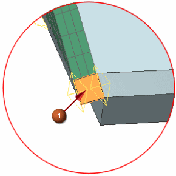
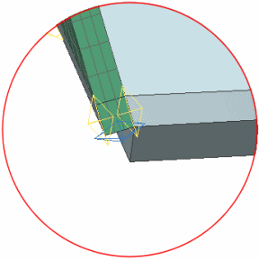
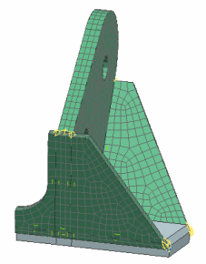

Use a seed mesh with a swept mesh
Another way to set up a swept mesh is to use a 2D seed mesh first.
 2D Mapped (Mesh group)
2D Mapped (Mesh group)
-


-

-
Element Size
10 mm
-
 Export Mesh to Solver
Export Mesh to Solver -
OK
-

-
Using the steps you learned previously, generate a swept mesh through the thickness of the model. Use the seed mesh face as the source face.

 Save (Quick Access toolbar)
Save (Quick Access toolbar)